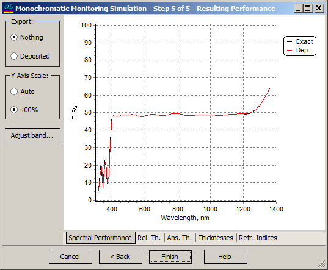
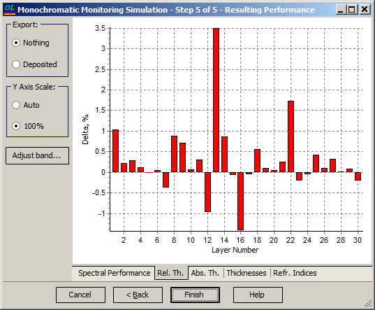
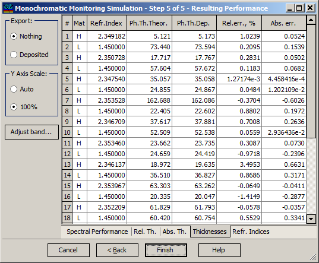
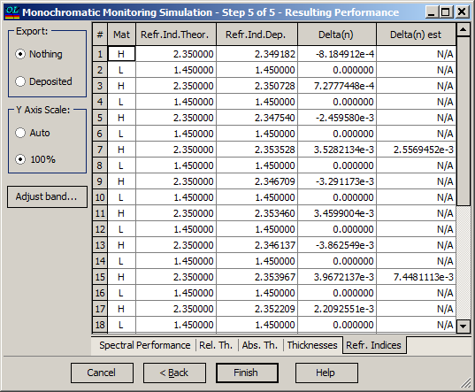

Monochromatic Monitoring Simulation - Resulting Performance
Monochromatic Monitoring Simulation - Resulting Performance
Navigation: OptiLayer Menu Commands > Analysis Menu > Monochromatic Monitoring Simulation >
Monochromatic Monitoring Simulation - Resulting Performance
` <single_wavelength_simulation.html>`__ ` <monochromatic_monitoring.html>`__ ` <wdmerroranalysis.html>`__

Results of the computational manufacturing experiment are presented at the fifth step of the dialogue.
The Spectral Performance tab allows the user to compare the spectral performance of the manufactured coating (red curve) with the theoretical design spectral performance (black curve).
The “Adjust band…” button allows opening the Options dialogue box to adjust the X- and Y-axis scales.

Rel.Th. tab allows representing obtained relative thickness errors in the form of a bar chart.
Abs.Th. tab is quite similar but represents obtained thickness errors as absolute values.
The Thicknesses tab allows previewing relative errors in layer thicknesses of the manufactured coating.

The Thicknesses tab allows the user to examine results of the computational manufacturing experiment in numerical form. The Ph.Th.Theor. column presents physical thicknesses of layers of theoretical design. The Ph.Th.Dep. column presents physical thicknesses of layers of the manufactured coating. The Rel.Err.,% column presents relative errors in layer thicknesses of the manufactured coating. The Abs.Err. column presents absolute errors in layer thicknesses of the manufactured coating. The Refr. Indices tab allows previewing information related to layer refractive indices during simulated deposition.

It includes theoretical and actually deposited refractive indices, their deviations, and an estimation of deviation obtained by monitoring algorithm. This estimation is possible only in cases when more than one extremum is detected during layer deposition, so it is usually available for a rather small number of layers. The Export field on the left part of the screen can be used for exporting the actually deposited design to the RAM. This design is exported after pressing the Finish button if the Deposited radio button is checked. The exported design can then be processed using other OptiLayer options. See also: